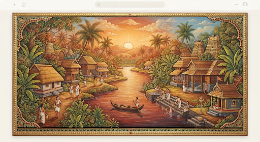
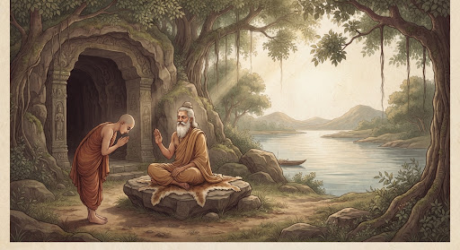
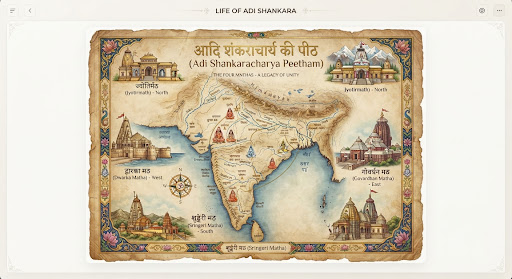

The Divine Life of
Adi Shankara
"By whose light the darkness of ignorance is dispelled, and the non-dual truth of Advaita is re-established for the welfare of all beings."
Life's Sacred Chapters
The Advent at Kalady
Born to the pious Namboothiri couple, Shivaguru and Aryamba, in the village of Kalady on the banks of the Purna. His birth was the fulfillment of a divine promise by Lord Shiva to revitalize the Sanatana Dharma.

Embracing the Path of Truth
While bathing in the Purna river, a crocodile seized the young Shankara's leg. In that critical moment, he sought and obtained his mother Aryamba's permission to enter Sannyasa, as "rebirth" through monastic vows would spare his life from the jaws of death.
The Guru's Recognition
Journeying to the banks of the Narmada, he found the cave of Sage Govinda Bhagavatpada. When asked "Who are you?", Shankara replied with the 'Dashashloki' (Nirvana Shatakam), proving his realized state. The Sage recognized him as an avatar of Shiva and initiated him.


The Bhashyas & Manisha Panchakam
Residing at Kedar Ghat on the holy Ganges, Shankara composed his monumental commentaries (Bhashyas) on the Prasthana Traya. It was here that he met Lord Shiva disguised as a Chandala, prompting the creation of the Manisha Panchakam. The Sringeri Shankar Math at Kedar Ghat stands as a living testament.
Establishing the Amnaya Peethams
To ensure the continuity of the tradition, the Jagadguru established four Peethams at the cardinal points of India: Sringeri (South), Dwarka (West), Puri (East), and Jyotirmath (North), each entrusted with one of the four Vedas.

The Literary Legacy
Beyond his extensive travels, Adi Shankara authored hundreds of texts — from intense intellectual commentaries to soulful devotional stotras.
Bhaja Govindam
Originally known as Moha Mudgara (The Destroyer of Illusion), this beautiful set of verses reminds seekers that intellectual debates are futile in the face of impermanence, urging devotion and direct contemplation of the Divine.
Vivekachudamani
Translating to "The Crest-Jewel of Discrimination", this Prakarana Granth details the step-by-step path of absolute discrimination between the Real (Atman) and the Unreal (Maya).
Soundarya Lahari
"The Waves of Beauty" — a monumental Sanskrit work of 100 slokas praising the beauty and power of the divine mother, Tripurasundari, serving as a primary text for Sri Vidya tantra.
Upadeshasahasri
"A Thousand Teachings" — the only independent philosophical treatise by Shankara universally accepted by scholars, structured as a dialogue teaching the non-duality of the Self.
Brahma Satyam
Jagan Mithya
"Brahman is the absolute reality, the world is an appearance, and the individual soul is none other than Brahman."
Explore The Teachings arrow_forward